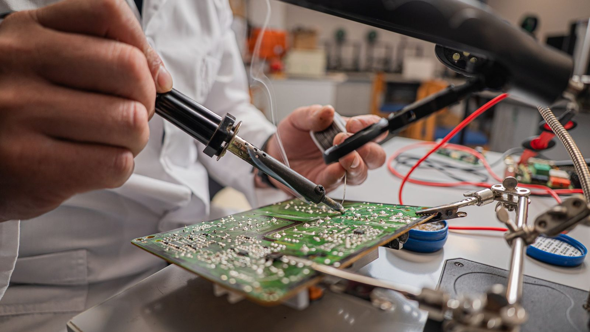

Sobre a Insiel
Tecnologia eletrônica feita em Campina Grande desde 1996.
Empresa de base tecnológica que projeta, fabrica, instala e monitora. Milhares de clientes atendidos na Paraíba e soluções implantadas em todo o Brasil.
História
De uma empresa de eletrônica a quatro divisões.
A Insiel nasceu em 1996, em Campina Grande, cidade conhecida pelo polo tecnológico e pelas escolas de engenharia. Começou com segurança eletrônica e, desde cedo, com uma decisão que define a empresa até hoje: desenvolver os próprios equipamentos e o próprio software em vez de só revender.
Essa engenharia levou a Insiel, em 2007, a produzir a primeira tornozeleira eletrônica brasileira para monitoramento de pessoas, com sistemas implantados em diversos estados. O mesmo caminho gerou o software de monitoramento de alarmes usado na central própria da Insiel e em outras empresas de segurança, e os controladores semafóricos e semáforos em LED instalados em cidades da Paraíba.
Com a geração distribuída, a Insiel passou a projetar e instalar usinas solares, hoje centenas em operação na Paraíba, e se associou à ABRAPE, presidida nacionalmente pelo diretor da empresa.

Linha do tempo
Marcos da Insiel.
Fundação
Início em Campina Grande, com segurança eletrônica e desenvolvimento próprio.
Tornozeleira eletrônica
Primeira empresa brasileira a produzir o dispositivo. Implantações em diversos estados.
Software e central 24h
Software de monitoramento e central própria, também usados por outras empresas. [PREENCHER ano]
Semáforos e energia solar
Controle semafórico em cidades da Paraíba e centenas de usinas solares. [PREENCHER anos]
Divisões
O que fazemos hoje.
Segurança Eletrônica
Monitoramento 24h com central própria, alarmes, câmeras, controle de acesso, cerca elétrica e automação.
Ver divisãoEnergia Solar
Usinas para residências, comércios e indústrias. Centenas em operação na Paraíba.
Ver divisãoEquipamentos e Software
Tornozeleira eletrônica e software de monitoramento, projetados e produzidos pela Insiel.
Ver divisãoTrânsito
Controladores semafóricos, semáforos em LED e sistemas inteligentes de controle de tráfego.
Ver divisãoMissão
[PREENCHER: escolher uma das duas opções]
Opção 1
"Desenvolver e entregar tecnologia eletrônica confiável, que protege pessoas, gera energia limpa e organiza cidades."
Opção 2
"Resolver problemas reais de segurança, energia e mobilidade com engenharia própria, feita na Paraíba para o Brasil."
ABRAPE
Presença no setor solar.
A Insiel é associada à ABRAPE – Associação Brasileira dos Produtores de Energia Solar, presidida nacionalmente pelo diretor da empresa. A associação reúne produtores de energia solar e atua junto ao setor e aos órgãos reguladores.
Conhecer a divisão de Energia SolarOnde estamos
Rua João Florentino de Carvalho, 43, José Pinheiro, Campina Grande – PB. Atendimento na Paraíba, Pernambuco e Rio Grande do Norte.